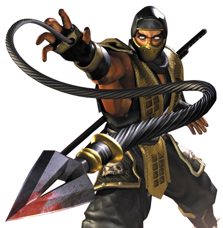
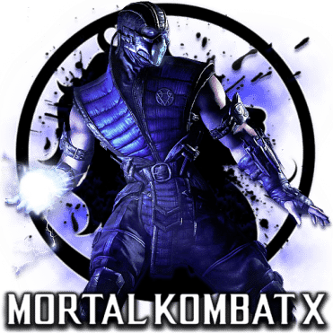

Mortal Kombat the Game

Mortal Kombat is a video game franchise originally developed by Midway Games' Chicago studio in 1992. Following Midway's bankruptcy, the Mortal Kombat development team was acquired by Warner Bros. and turned into NetherRealm Studios. Warner Bros. Interactive Entertainment currently owns the rights of the franchise and rebooted it in 2009. The development of the first game was originally based on an idea that Ed Boon and John Tobias had of making a video game starring Jean-Claude Van Damme, but as that idea fell through, a fantasy-horror themed fighting game titled Mortal Kombat was created instead. The original game has spawned many sequels and has spun a media franchise consisting of several action-adventure games, films (animated and live-action with its own sequel), and television series (animated and live-action). Other spin-offs include comic book series, a card game, and a live-action tour. Along with Capcom's Street Fighter and Bandai Namco Entertainment's Tekken, Mortal Kombat has become one of the most successful fighting franchises in the history of video games. As of June 2000, the franchise had generated $5 billion in revenue, making it one of the highest-grossing media franchise of all time.
The series has a reputation for high levels of bloody violence, including, most notably, its Fatalities (finishing moves, requiring a sequence of button inputs to perform). The Fatalities, in part, led to the creation of the ESRB video game rating system. The series name itself is also known for using the letter "K" in place of "C" for the hard C sound, thus intentionally misspelling the word "combat", as well as other words with the hard C sound within later games in the series. Early games in this series were also noted for their realistic digitized sprites (which differentiated it from its contemporaries' hand-drawn sprites) and an extensive use of palette swapping to create new characters.The series was subject of a major video game controversy and several court cases, largely related to its extremely violent content, especially in relation to the original game which paved a way for the introduction of the ESRB (Entertainment Software Rating Board) game rating system in 1994 as well as Australian Classification Board. Various games in the series have been banned in a number of countries. SuperData Research CEO Joost van Dreunen said, "Because of the obvious rift between gamers on the one hand and adult society on the other, Mortal Kombat set the tone for what constituted gamer culture."
| Title | Release | Original platform | Notes |
|---|---|---|---|
| Mortal Kombat | 1992 | Arcade | The original Mortal Kombat game. |
| Mortal Kombat 2 | 1993 | Arcade | Sequel to the first Mortal Kombat. |
| Mortal Kombat 3 | 1995 | Arcade | Sequel to Mortal Kombat II. |
| Ultimate Mortal Kombat 3 | 1995 | Arcade | An update of Mortal Kombat 3. |
| Mortal Kombat Trilogy | 1996 | PS1, N64, Saturn | An update of Ultimate Mortal Kombat 3. |
| Mortal Kombat 4 | 1997 | Arcade | The first 3D game in the series; sequel to Mortal Kombat 3 and its updates. |
| Mortal Kombat Mythologies: Sub-Zero | 1997 | PS1, N64 | An action-adventure spin-off about Sub-Zero. Prequel to the first Mortal Kombat. |
| Mortal Kombat Gold | 1999 | Dreamcast | An update of Mortal Kombat 4. |
| Mortal Kombat: Special Forces | 2000 | PS1 | An action-adventure spin-off about Jax. Prequel to the first Mortal Kombat. |
| Mortal Kombat: Deadly Alliance | 2002 | PS2, GCN, Xbox | Sequel to Mortal Kombat 4. |
| Mortal Kombat: Tournament Edition | 2003 | GBA | One of two GBA versions of Deadly Alliance. |
| Mortal Kombat: Deception | 2004 | PS2, GCN, Xbox | Sequel to Deadly Alliance. |
| Mortal Kombat: Shaolin Monks | 2005 | PS2, Xbox | An action-adventure spin-off about Liu Kang and Kung Lao set between MK and MKII. |
| Mortal Kombat: Armageddon | 2006 | PS2, Xbox | Sequel to Deception and the final title of the original main series. |
| Mortal Kombat: Unchained | 2006 | PSP | The PSP version of Deception. |
| Ultimate Mortal Kombat | 2007 | NDS | Another port of Ultimate Mortal Kombat 3. |
| Mortal Kombat vs. DC Universe | 2008 | PS3, X360 | A non-canonical crossover title. |
| Mortal Kombat (2011) | 2011 | PS3, Xbox 360 | Reboot story combining Mortal Kombat, Mortal Kombat II, and Mortal Kombat 3. |
| Mortal Kombat Arcade Kollection | 2011 | PSN, XBLA | Includes MK, MKII and UMK3. (Originally intended to be an HD remake of the three games, titled Mortal Kombat HD Arcade Kollection.) |
| Mortal Kombat: Komplete Edition | 2012 | PS3, Xbox 360 | Re-release of Mortal Kombat (2011) including its downloadable content. |
| Mortal Kombat X | 2015 | PS4, Xbox One | A sequel to the 2011 game. |
| Mortal Kombat XL | 2016 | PS4, Xbox One | Re-release of Mortal Kombat X including its downloadable content. |